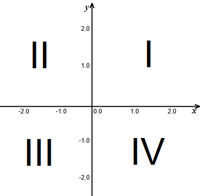
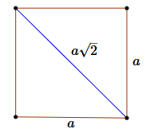
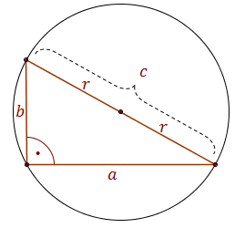
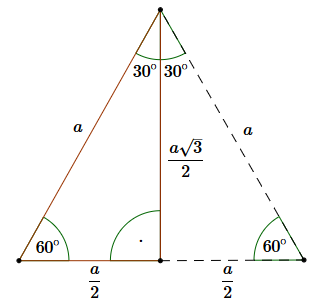
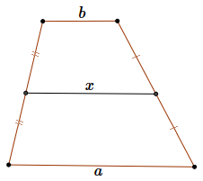
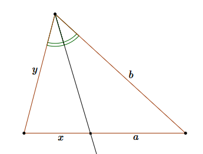

Jesteś tutaj: Matura → Matura - najważniejsze wzory spoza tablic
Matura - najważniejsze wzory spoza tablic
Na maturze każdy uczeń może korzystać z tablic
maturalnych, które można pobrać pod poniższym linkiem:
Warto umieć również zapisywać liczby parzyste: \(2n\) oraz nieparzyste: \(2n+1\), gdzie \(n\)
jest dowolną liczbą całkowitą.
Omówienie tego zagadnienia, wraz z przykładami, prezentuję od 19 części kursu do matury.
 Omówienie funkcji kwadratowej wraz z przykładami prezentuję od 26 części kursu.
Omówienie funkcji kwadratowej wraz z przykładami prezentuję od 26 części kursu.
Warto znać również wzrór wykorzystujący dowolny \(k\)-ty wyraz zamiast \(1\)-szego: \[a_n=a_k+(n-k)\cdot r\] Podobnie dla ciągu geometrycznego mamy podany wzór: \(a_n = a_1\cdot q^{n-1}\), a można również stosować taki wzór uogólniony: \[a_n = a_k\cdot q^{n-k}\] Omówienie tych zagadnień prezentuję od 34 części kursu.
Bardziej uniwersalny jest wzór uwzględniający wielokrotną kapitalizację odsetek w ciągu roku: \[K_n = K\cdot \left(1+\frac{p}{100\cdot k}\right)^{n\cdot k}\] gdzie:
Przed maturą warto dobrze zapoznać się z powyższymi tablicami, żeby na maturze
wiedzieć, gdzie szybko znaleźć potrzebną informację. Poniżej prezentuję te wzory
maturalne, których nie ma w tablicach, a które również bywają przydatne.
Dział I - błąd bezwzględny i względny
Przy oznaczeniach: \( x \) - to dokładna wartość
\( x_0 \) - to zmierzona (przybliżona) wartość
błąd bezwzględny liczymy ze wzoru: \[ \Delta x =|x-x_0| \] błąd względny ze
wzoru: \[ \delta = \frac{\Delta x}{x} = \frac{|x-x_0|}{x} \] Czasami błąd względny chcemy wyrazić w
procentach i wtedy korzystamy ze wzoru: \[ \delta = \frac{\Delta x}{x}\cdot 100\% =
\frac{|x-x_0|}{x}\cdot 100\% \] Omówienie tego zagadnienia, wraz z przykładami, prezentuję w 7 części kursu do matury.
\( x_0 \) - to zmierzona (przybliżona) wartość
Dział II - różne własności liczb
Warto pamiętać jakie są podstawowe cechy podzielności liczb:Liczba jest podzielna przez \(2\), jeśli jest parzysta.
Liczba jest podzielna przez \(3\), jeżeli suma jej cyfr dzieli się przez \(3\).
Liczba jest podzielna przez \(5\), jeżeli jej ostatnia cyfra dzieli się przez \(5\).
Liczba jest podzielna przez \(6\), jeśli jest parzysta i suma jej cyfr jest podzielna przez
\(3\).
Liczba jest podzielna przez \(9\), jeśli suma jej cyfr tworzy liczbę podzielną przez \(9\).
Dział III - funkcje
Z funkcji warto pamiętać, kilka definicji, których nie ma w tablicach:oś odciętych - to oś \(x\)-ów
oś rzędnych - to oś \(y\)-ów
miejsce zerowe - to argument \(x\), dla którego funkcja przecina się z osią
\(x\)-ów. Gdy mamy wzór funkcji \(f(x) = wzór\), to miejsca zerowe wyliczamy rozwiązując
równanie: \[wzór = 0\]
dziedzina - to zbiór wszystkich \(x\)-ów funkcji
zbiór wartości - to zbiór wszystkich\(y\)-ów funkcji
numery ćwiartek w układzie współrzędnych: 
Dział IV - Funkcja kwadratowa
Do informacji, które są podane w tablicach maturalnych warto dodać, że:Funkcja kwadratowa dana wzorem ogólnym \(f(x)=ax^2+bx+c\) przecina oś \(y\)-ów w wartości
równej \(c\) (ponieważ \(f(0)=c\)).
Jeśli funkcja kwadratowa ma dwa miejsca zerowe: \(x_1\) oraz \(x_2\), to wierzchołek
paraboli \(W=(p,q)\) ma współrzędną \(x\)-ową \(p\) dokładnie po środku między miejscami
zerowymi, czyli \(p=\frac{x_1+x_2}{2}\).
Żeby znaleźć minimum lub maksimum funkcji w przedziale \(\langle a,b \rangle \) należy
policzyć \(f(a)\) i \(f(b)\) oraz sprawdzić czy współrzędna \(x\)-owa wierzchołka \(p\)
należy do przedziału \(\langle a,b \rangle \), jeśli tak, to policzyć \(f(p)\) i z wartości
\(f(a)\), \(f(b)\) i \(f(p)\) wybrać wartość najmniejszą lub największą.
Dział V - Ciąg arytmetyczny i geometryczny
Z ciągu arytmetycznego mamy podany w tablicach wzór na \(n\)-ty wyraz postaci: \(a_n=a_1+(n-1)\cdot r\).Warto znać również wzrór wykorzystujący dowolny \(k\)-ty wyraz zamiast \(1\)-szego: \[a_n=a_k+(n-k)\cdot r\] Podobnie dla ciągu geometrycznego mamy podany wzór: \(a_n = a_1\cdot q^{n-1}\), a można również stosować taki wzór uogólniony: \[a_n = a_k\cdot q^{n-k}\] Omówienie tych zagadnień prezentuję od 34 części kursu.
Dział VI - Kapitalizacja odsetek
W tablicach maturalnych mamy podany wzór na kapitalizację odsetek: \(K_n = K\cdot \left(1+\frac{p}{100}\right)^n\).Bardziej uniwersalny jest wzór uwzględniający wielokrotną kapitalizację odsetek w ciągu roku: \[K_n = K\cdot \left(1+\frac{p}{100\cdot k}\right)^{n\cdot k}\] gdzie:
\(K\) - kapitał
początkowy
\(n\) - liczba lat oszczędzania
\(p\) - oprocentowanie w skali roku
\(k\) - liczba kapitalizacji w ciągu roku
\(K_n\) - kapitał zgromadzony po \(n\) latach oszczędzania
Przykłady zastosowania tego wzoru prezentuję na tej stronie.
\(n\) - liczba lat oszczędzania
\(p\) - oprocentowanie w skali roku
\(k\) - liczba kapitalizacji w ciągu roku
\(K_n\) - kapitał zgromadzony po \(n\) latach oszczędzania
Dział VII - Geometria płaska
Warto pamiętać często stosowany wzór na przekątną kwadratu: 
Dla trójkąta równobocznego:  wato pamiętać o własności: \[R=2r\] W tablicach
maturalnych mamy to podane w postaci: \[R = \frac{2}{3}h\\[6pt] r = \frac{1}{3}h\] gdzie \(h\) -
to wysokość trójkąta równobocznego.
wato pamiętać o własności: \[R=2r\] W tablicach
maturalnych mamy to podane w postaci: \[R = \frac{2}{3}h\\[6pt] r = \frac{1}{3}h\] gdzie \(h\) -
to wysokość trójkąta równobocznego.
Inaczej mówiąc - wysokości w trójkącie równobocznym przecinają się w stosunku \(2:1\).
wato pamiętać o własności: \[R=2r\] W tablicach
maturalnych mamy to podane w postaci: \[R = \frac{2}{3}h\\[6pt] r = \frac{1}{3}h\] gdzie \(h\) -
to wysokość trójkąta równobocznego.Inaczej mówiąc - wysokości w trójkącie równobocznym przecinają się w stosunku \(2:1\).
Dla trójkąta prostokątnego:  warto pamiętać, że środek okręgu opisanego leży dokładnie
na środku przeciwprostokątnej.
Własności trójkąta \(30^\circ \), \(60^\circ \), \(90^\circ \): 
W trapezie zachodzi następująca własność:  Odcinek łączący środki ramion jest równoległy do podstaw
i ma długość: \[x=\frac{a+b}{2}\]
Wzór na sumę kątów wewnątrznych w \(n\)-kącie: \[(n-2)\cdot 180\]
Na poziomie rozszerzonym bywa przydatne twierdzenie o dwusiecznej dla
dowolnego trójkąta: 
\[\frac{x}{y}=\frac{a}{b}\]
Dział VIII - Kombinatoryka
Wzór na liczbę przekątnych \(n\)-kąta (przydatny raczej na rozszerzeniu): \[\binom{n}{2}-n=\frac{n!}{2!\cdot (n-2)!}-n= \frac{n(n-1)}{2}-\frac{2n}{2}=\frac{n(n-3)}{2}\] (z \(n\) wierzchołków wybieramy dwa do utworzenia odcinka i odejmujemy te odcinki które są bokami).Dział X - Zadania dowodowe
W zadaniach dowodowych czasem przydaje się nierówność między średnią arytmetyczną i kwadratową: \[\frac{x+y}{2}\le \sqrt{\frac{x^2+y^2}{2}}\] lub w wersji dla trzech literek: \[\frac{x+y+z}{3}\le \sqrt{\frac{x^2+y^2+z^2}{3}}\] Zestaw zadań dowodowych przygotowałem na tej
stronie.